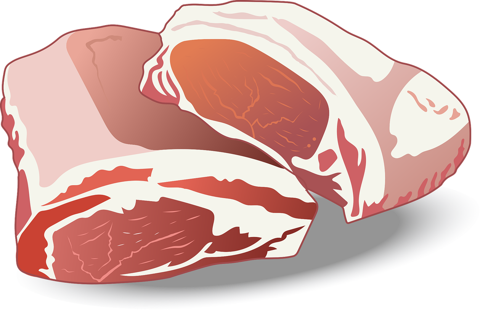

Home
Rattle provides a very nutrional renuable food source using revolutionary technology to clone exact copies of rats. The invention behind this process is the rat duplicator which induces mitosis in a willing rodent resulting in thousands of identical clones. Our aim is to create and distribute a food source that will one day be sufficient enough to completely end world hunger. Live rats can also be bought for those who may need them.
The meat we sell is filling, rich in nutrients and purely eco-friendly, making it a worthy investment considering how cheap its production is. Plus, worry not animal lovers, we take utmost care of our rodents during the entierety of their livespan here at Rattle.
Our deligent staff is dedicated to providing the highest quality rats to whoever may need them and work towards a better future for the planet. We also offer optimal operatinghours and rates to suit everyone's needs. If you wish to know more about our story or the good reviews that other clients have left us, this site also contains that information. You can contact us if you wish to procure our product for yourself or visit some of the companies we have partnered with.